library(tidyverse)
library(broom)
library(brms)
library(tidybayes)
library(ggdist)
library(ggdag)
# Plot stuff
clrs <- MetBrewer::met.brewer("Lakota", 6)
theme_set(theme_bw())
# Seed stuff
BAYES_SEED <- 1234
set.seed(1234)
# Data
data(Howell1, package = "rethinking")
d <- Howell1 %>%
filter(age > 18) %>%
# Stan doesn't like working with columns with attributes, but I want to keep
# the attributes for unscaling later, so there are two scaled height columns
mutate(height_scaled = scale(height),
height_z = as.numeric(height_scaled)) %>%
mutate(sex = factor(male),
sex_nice = factor(male, labels = c("Female", "Male")))
height_scale <- attributes(d$height_scaled) %>%
set_names(janitor::make_clean_names(names(.)))Video #4 code
Categories, curves, and splines
head(Howell1)
## height weight age male
## 1 151.765 47.82561 63 1
## 2 139.700 36.48581 63 0
## 3 136.525 31.86484 65 0
## 4 156.845 53.04191 41 1
## 5 145.415 41.27687 51 0
## 6 163.830 62.99259 35 1
ggplot(d, aes(x = height, y = weight, color = sex_nice)) +
geom_point() +
scale_color_manual(values = clrs[1:2]) +
labs(x = "Height (cm)", y = "Weight (kg)", color = NULL) +
theme(legend.position = "bottom")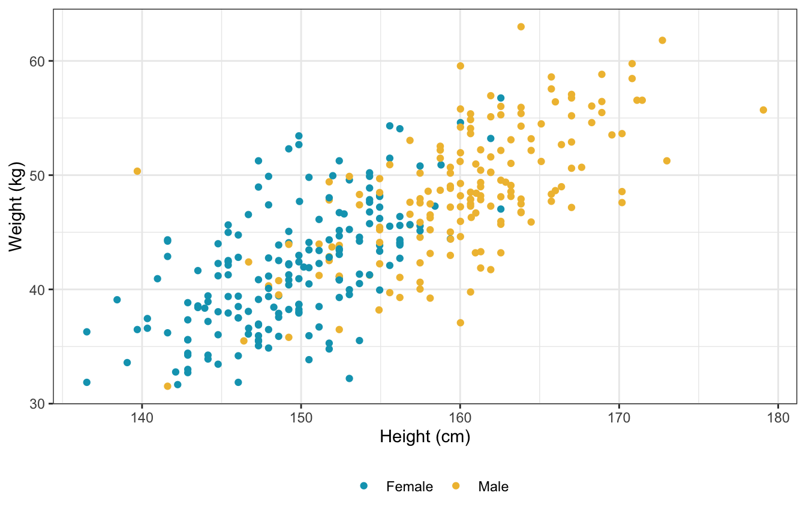
Sex only
\[ \begin{aligned} W_i &\sim \mathcal{N}(\mu_i, \sigma) \\ \mu_i &= \alpha_{S[i]} \\ \\ \alpha_j &\sim \mathcal{N}(60, 10) \\ \sigma &\sim \operatorname{Uniform}(0, 10) \end{aligned} \]
Create a model with no intercept; use a factor version of sex to get the indexes like he does with \(\alpha_{S[i]}\).
priors <- c(prior(normal(60, 10), class = b),
prior(uniform(0, 10), class = sigma, lb = 0, ub = 10))
sex_weight <- brm(
bf(weight ~ 0 + sex),
data = d,
family = gaussian(),
prior = priors,
chains = 4, cores = 4, seed = BAYES_SEED
)
## Compiling Stan program...
## Trying to compile a simple C file
## Start samplingsex_weight
## Family: gaussian
## Links: mu = identity; sigma = identity
## Formula: weight ~ 0 + sex
## Data: d (Number of observations: 346)
## Draws: 4 chains, each with iter = 2000; warmup = 1000; thin = 1;
## total post-warmup draws = 4000
##
## Population-Level Effects:
## Estimate Est.Error l-95% CI u-95% CI Rhat Bulk_ESS Tail_ESS
## sex0 41.87 0.41 41.08 42.65 1.00 3580 3109
## sex1 48.63 0.43 47.81 49.49 1.00 4090 2920
##
## Family Specific Parameters:
## Estimate Est.Error l-95% CI u-95% CI Rhat Bulk_ESS Tail_ESS
## sigma 5.52 0.22 5.12 5.98 1.00 4135 2820
##
## Draws were sampled using sampling(NUTS). For each parameter, Bulk_ESS
## and Tail_ESS are effective sample size measures, and Rhat is the potential
## scale reduction factor on split chains (at convergence, Rhat = 1).Posterior mean weights:
sw_post_means <- sex_weight %>%
gather_draws(b_sex0, b_sex1)
sw_post_means %>%
mean_hdci()
## # A tibble: 2 × 7
## .variable .value .lower .upper .width .point .interval
## <chr> <dbl> <dbl> <dbl> <dbl> <chr> <chr>
## 1 b_sex0 41.9 41.1 42.7 0.95 mean hdci
## 2 b_sex1 48.6 47.7 49.4 0.95 mean hdci
sw_post_means %>%
ggplot(aes(x = .value, fill = .variable)) +
stat_halfeye() +
scale_fill_manual(values = clrs[1:2]) +
labs(x = "Posterior mean weight (kg)\n(Coefficient for sex)", y = "Density", fill = NULL) +
theme(legend.position = "bottom")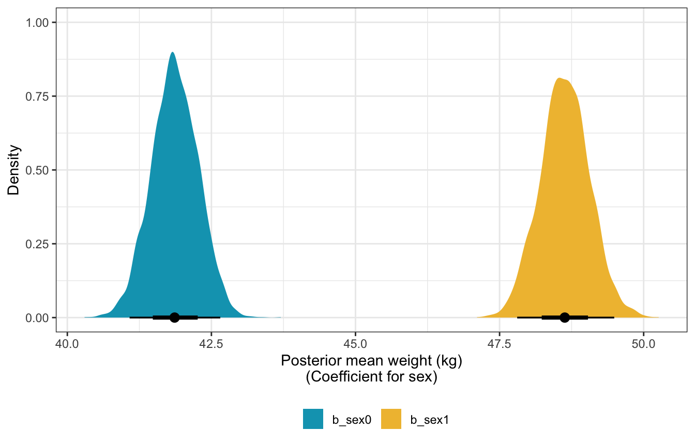
Posterior mean contrast in weights:
sw_post_means_wide <- sex_weight %>%
spread_draws(b_sex0, b_sex1) %>%
mutate(diff = b_sex1 - b_sex0)
sw_post_means_wide %>%
select(diff) %>%
mean_hdci()
## # A tibble: 1 × 6
## diff .lower .upper .width .point .interval
## <dbl> <dbl> <dbl> <dbl> <chr> <chr>
## 1 6.77 5.63 7.95 0.95 mean hdci
sw_post_means_wide %>%
ggplot(aes(x = diff)) +
stat_halfeye(fill = clrs[3]) +
labs(x = "Posterior mean weight contrast (kg)\nWomen − Men", y = "Density")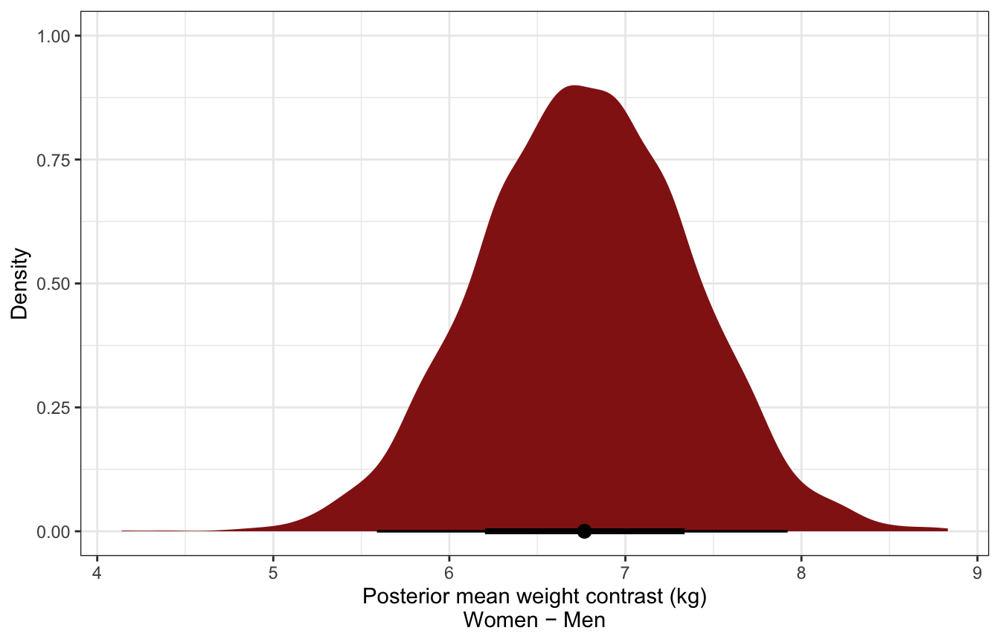
Posterior predicted weights:
sw_post_pred <- tibble(sex = c("0", "1")) %>%
add_predicted_draws(sex_weight, ndraws = 1000)
sw_post_pred %>%
mean_hdci()
## # A tibble: 2 × 8
## sex .row .prediction .lower .upper .width .point .interval
## <chr> <int> <dbl> <dbl> <dbl> <dbl> <chr> <chr>
## 1 0 1 41.6 30.7 50.9 0.95 mean hdci
## 2 1 2 49.0 38.2 59.3 0.95 mean hdci
sw_post_pred %>%
ungroup() %>%
mutate(sex_nice = factor(sex, labels = c("Female", "Male"))) %>%
ggplot(aes(x = .prediction, fill = sex_nice)) +
stat_halfeye(alpha = 0.75) +
scale_fill_manual(values = clrs[1:2]) +
labs(x = "Posterior predicted weight (kg)", y = "Density", fill = NULL) +
theme(legend.position = "bottom")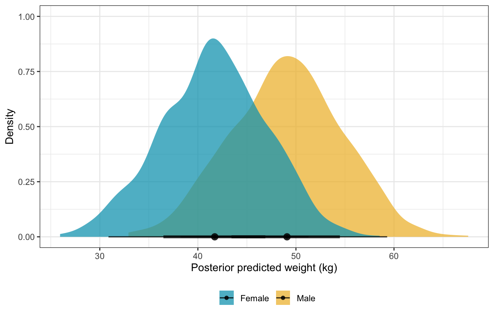
Posterior predicted contrast in weights:
sw_post_pred_diff <- tibble(sex = c("0", "1")) %>%
add_predicted_draws(sex_weight, ndraws = 1000) %>%
compare_levels(variable = .prediction, by = sex)
sw_post_pred_diff %>%
mean_hdci()
## # A tibble: 1 × 7
## sex .prediction .lower .upper .width .point .interval
## <chr> <dbl> <dbl> <dbl> <dbl> <chr> <chr>
## 1 1 - 0 7.21 -7.29 21.9 0.95 mean hdci
sw_post_pred_diff %>%
ggplot(aes(x = .prediction)) +
stat_halfeye(aes(fill = stat(x > 0))) +
geom_vline(xintercept = 0) +
scale_fill_manual(values = c(colorspace::lighten(clrs[3], 0.5), clrs[3]),
guide = "none") +
labs(x = "Posterior weight contrast (kg)\nWomen − Men", y = "Density")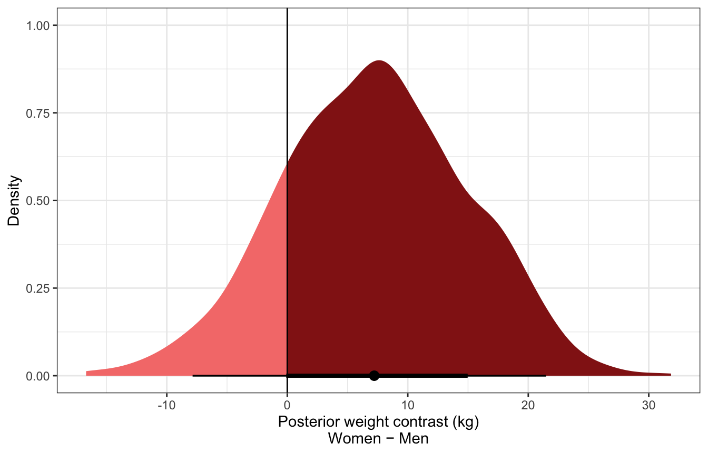
sw_stan.stan
data {
// Stuff from R
int<lower=1> n;
vector[n] weight;
int sex[n];
}
parameters {
// Things to estimate
real<lower=0, upper=10> sigma;
vector[2] a;
}
transformed parameters {
vector[n] mu;
mu = a[sex];
}
model {
// Likelihood
weight ~ normal(mu, sigma);
// Priors
sigma ~ uniform(0, 10);
a ~ normal(60, 10);
}
generated quantities {
real diff;
matrix[n, 2] weight_rep;
vector[n] diff_rep;
// Calculate the contrasts / difference between group means
diff = a[2] - a[1];
// Generate a posterior predictive distribution for each sex
// To do this we have to create a matrix, with a column per sex
for (j in 1:2) {
for (i in 1:n) {
weight_rep[i, j] = normal_rng(a[j], sigma);
}
}
// Generate a posterior predictive distribution of group contrasts
for (i in 1:n) {
diff_rep[i] = normal_rng(a[2], sigma) - normal_rng(a[1], sigma);
}
}stan_data <- list(n = nrow(d),
weight = d$weight,
sex = d$male + 1)
model_sw_stan <- rstan::sampling(
object = sw_stan,
data = stan_data,
iter = 5000, warmup = 1000, seed = BAYES_SEED, chains = 4, cores = 4
)print(model_sw_stan,
pars = c("sigma", "a[1]", "a[2]", "diff"))
## Inference for Stan model: ce4f92ccf1e48f603c1b01a6bf1ee94d.
## 4 chains, each with iter=5000; warmup=1000; thin=1;
## post-warmup draws per chain=4000, total post-warmup draws=16000.
##
## mean se_mean sd 2.5% 25% 50% 75% 97.5% n_eff Rhat
## sigma 5.52 0 0.21 5.12 5.37 5.51 5.66 5.96 14336 1
## a[1] 41.86 0 0.41 41.05 41.58 41.86 42.14 42.67 14671 1
## a[2] 48.63 0 0.43 47.79 48.34 48.64 48.92 49.49 15314 1
## diff 6.77 0 0.60 5.60 6.37 6.77 7.17 7.94 14697 1
##
## Samples were drawn using NUTS(diag_e) at Thu Sep 15 01:54:27 2022.
## For each parameter, n_eff is a crude measure of effective sample size,
## and Rhat is the potential scale reduction factor on split chains (at
## convergence, Rhat=1).Posterior mean weights:
sw_stan_post_means <- model_sw_stan %>%
gather_draws(a[i])
## Warning: `gather_()` was deprecated in tidyr 1.2.0.
## Please use `gather()` instead.
## This warning is displayed once every 8 hours.
## Call `lifecycle::last_lifecycle_warnings()` to see where this warning was generated.
sw_stan_post_means %>%
mean_hdci()
## # A tibble: 2 × 8
## i .variable .value .lower .upper .width .point .interval
## <int> <chr> <dbl> <dbl> <dbl> <dbl> <chr> <chr>
## 1 1 a 41.9 41.1 42.7 0.95 mean hdci
## 2 2 a 48.6 47.7 49.4 0.95 mean hdci
sw_stan_post_means %>%
ungroup() %>%
mutate(nice_i = factor(i, labels = c("a_female", "a_male"))) %>%
ggplot(aes(x = .value, fill = nice_i)) +
stat_halfeye() +
scale_fill_manual(values = clrs[1:2]) +
labs(x = "Posterior mean weight (kg)\n(Coefficient for sex)", y = "Density", fill = NULL) +
theme(legend.position = "bottom")Posterior mean contrast in weights:
sw_stan_post_diff_means <- model_sw_stan %>%
gather_draws(diff)
sw_stan_post_diff_means %>%
mean_hdci()
## # A tibble: 1 × 7
## .variable .value .lower .upper .width .point .interval
## <chr> <dbl> <dbl> <dbl> <dbl> <chr> <chr>
## 1 diff 6.77 5.58 7.92 0.95 mean hdci
sw_stan_post_diff_means %>%
ggplot(aes(x = .value)) +
stat_halfeye(fill = clrs[3]) +
labs(x = "Posterior mean weight contrast (kg)\nWomen − Men", y = "Density")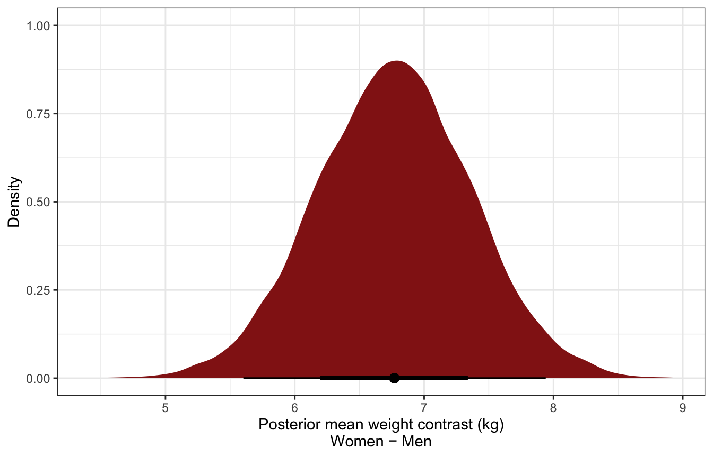
Posterior predicted weights:
predicted_weights_stan <- model_sw_stan %>%
spread_draws(weight_rep[i, sex])
predicted_weights_stan %>%
group_by(sex) %>%
mean_hdci()
## # A tibble: 2 × 10
## sex i i.lower i.upper weight_rep weight_…¹ weigh…² .width .point .inte…³
## <int> <dbl> <int> <int> <dbl> <dbl> <dbl> <dbl> <chr> <chr>
## 1 1 174. 1 329 41.9 30.9 52.7 0.95 mean hdci
## 2 2 174. 1 329 48.6 37.8 59.5 0.95 mean hdci
## # … with abbreviated variable names ¹weight_rep.lower, ²weight_rep.upper,
## # ³.interval
predicted_weights_stan %>%
ungroup() %>%
mutate(sex_nice = factor(sex, labels = c("Female", "Male"))) %>%
ggplot(aes(x = weight_rep, fill = sex_nice)) +
stat_halfeye(alpha = 0.75) +
scale_fill_manual(values = clrs[1:2]) +
labs(x = "Posterior predicted weight (kg)", y = "Density", fill = NULL) +
theme(legend.position = "bottom")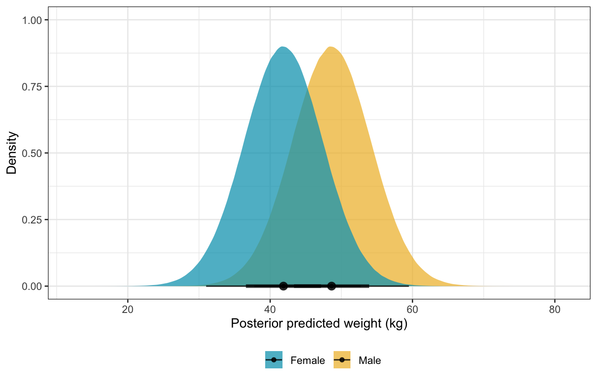
Posterior predicted contrast in weights:
sw_post_pred_diff_stan <- model_sw_stan %>%
gather_draws(diff_rep[i])
sw_post_pred_diff_stan %>%
group_by(.variable) %>%
mean_hdci() %>%
select(-starts_with("i"))
## # A tibble: 1 × 7
## .variable .value .value.lower .value.upper .width .point .interval
## <chr> <dbl> <dbl> <dbl> <dbl> <chr> <chr>
## 1 diff_rep 6.77 -8.63 22.1 0.95 mean hdci
sw_post_pred_diff_stan %>%
ggplot(aes(x = .value)) +
stat_halfeye(aes(fill = stat(x > 0))) +
geom_vline(xintercept = 0) +
scale_fill_manual(values = c(colorspace::lighten(clrs[3], 0.5), clrs[3]),
guide = "none") +
labs(x = "Posterior weight contrast (kg)\nWomen − Men", y = "Density")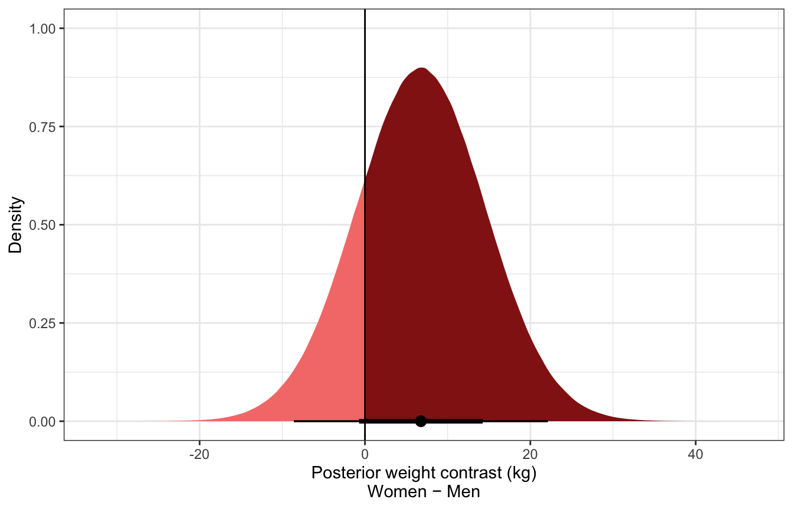
Sex + height
\[ \begin{aligned} W_i &\sim \mathcal{N}(\mu_i, \sigma) \\ \mu_i &= \alpha_{S[i]} + \beta_{S[i]}(H_i - \bar{H}) \\ \\ \alpha_j &\sim \mathcal{N}(60, 10) \\ \beta_j &\sim \operatorname{LogNormal}(0, 1) \\ \sigma &\sim \operatorname{Uniform}(0, 10) \end{aligned} \]
This is the wonkiest syntax ever, but it works! We can hack the nl capabilities of brms to create indexed parameters.
priors <- c(prior(normal(60, 10), class = b, nlpar = a),
prior(lognormal(0, 1), class = b, nlpar = b, lb = 0),
prior(uniform(0, 10), class = sigma, lb = 0, ub = 10))
model_height_sex <- brm(
bf(weight ~ 0 + a + b * height_z,
a ~ 0 + sex,
b ~ 0 + sex,
nl = TRUE),
data = d,
family = gaussian(),
prior = priors,
chains = 4, cores = 4, seed = BAYES_SEED
)
## Compiling Stan program...
## Trying to compile a simple C file
## Start samplingmodel_height_sex
## Family: gaussian
## Links: mu = identity; sigma = identity
## Formula: weight ~ 0 + a + b * height_z
## a ~ 0 + sex
## b ~ 0 + sex
## Data: d (Number of observations: 346)
## Draws: 4 chains, each with iter = 2000; warmup = 1000; thin = 1;
## total post-warmup draws = 4000
##
## Population-Level Effects:
## Estimate Est.Error l-95% CI u-95% CI Rhat Bulk_ESS Tail_ESS
## a_sex0 45.10 0.46 44.19 45.99 1.00 3021 3038
## a_sex1 45.19 0.47 44.30 46.11 1.00 2828 2799
## b_sex0 4.90 0.50 3.88 5.89 1.00 3018 2442
## b_sex1 4.65 0.45 3.79 5.53 1.00 2964 2861
##
## Family Specific Parameters:
## Estimate Est.Error l-95% CI u-95% CI Rhat Bulk_ESS Tail_ESS
## sigma 4.28 0.17 3.97 4.62 1.00 3600 2789
##
## Draws were sampled using sampling(NUTS). For each parameter, Bulk_ESS
## and Tail_ESS are effective sample size measures, and Rhat is the potential
## scale reduction factor on split chains (at convergence, Rhat = 1).sex_height_weight_post_pred <- expand_grid(
height_z = seq(min(d$height_z), max(d$height_z), length.out = 50),
sex = 0:1
) %>%
add_predicted_draws(model_height_sex) %>%
compare_levels(variable = .prediction, by = sex, comparison = list(c("0", "1"))) %>%
mutate(height_unscaled = (height_z * height_scale$scaled_scale) + height_scale$scaled_center)Overall distribution of predictive posterior contrasts:
ggplot(sex_height_weight_post_pred, aes(x = .prediction)) +
stat_halfeye(fill = clrs[3]) +
labs(x = "Posterior mean weight contrast (kg)\nWomen − Men", y = "Density")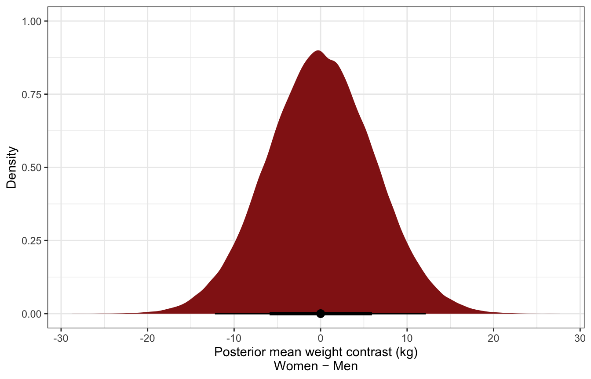
Distribution of predictive posterior contrasts across range of heights:
ggplot(sex_height_weight_post_pred, aes(x = height_unscaled, y = .prediction)) +
stat_lineribbon(aes(fill_ramp = stat(.width)), .width = ppoints(50),
fill = clrs[3], color = colorspace::darken(clrs[3], 0.5),
show.legend = FALSE) +
geom_hline(yintercept = 0, linetype = "dashed") +
scale_fill_ramp_continuous(from = "transparent", range = c(1, 0)) +
labs(x = "Height (cm)", y = "Posterior weight contrast (kg)\nWomen − Men")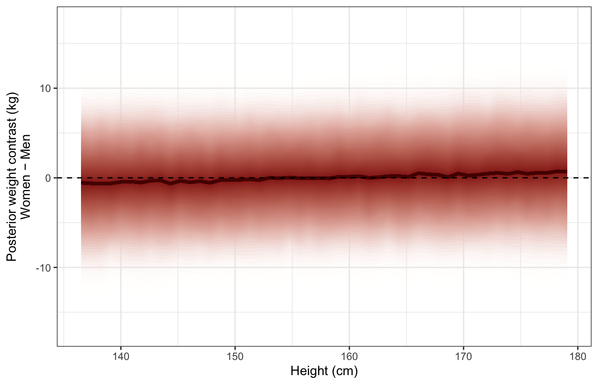
Extracting Stan code from Rethinking models
The ulam() function is super helpful for translating McElreath’s quap() syntax into Stan!
m_SHW <- rethinking::quap(
alist(
W ~ dnorm(mu, sigma),
mu <- a[S] + b[S] * (H - Hbar),
a[S] ~ dnorm(60, 10),
b[S] ~ dlnorm(0, 1),
sigma ~ dunif(0, 10)
),
data = list(
W = d$weight,
H = d$height,
Hbar = mean(d$height),
S = d$male + 1
)
)
cat(rethinking::ulam(m_SHW, sample = FALSE)$model)
## data{
## vector[346] W;
## real Hbar;
## vector[346] H;
## int S[346];
## }
## parameters{
## vector[2] a;
## vector<lower=0>[2] b;
## real<lower=0,upper=10> sigma;
## }
## model{
## vector[346] mu;
## sigma ~ uniform( 0 , 10 );
## b ~ lognormal( 0 , 1 );
## a ~ normal( 60 , 10 );
## for ( i in 1:346 ) {
## mu[i] = a[S[i]] + b[S[i]] * (H[i] - Hbar);
## }
## W ~ normal( mu , sigma );
## }sex_height.stan
data {
// Stuff from R
int<lower=1> n;
vector[n] weight;
vector[n] height;
int sex[n];
}
transformed data {
// Center and standardize height
vector[n] height_z;
height_z = (height - mean(height)) / sd(height);
}
parameters {
// Things to estimate
real<lower=0, upper=10> sigma;
vector[2] a;
vector<lower=0>[2] b;
}
model {
vector[n] mu;
// Model for mu with intercepts (a) and coefficients (b) for each sex
for (i in 1:n) {
mu[i] = a[sex[i]] + b[sex[i]] * height_z[i];
}
// Likelihood
weight ~ normal(mu, sigma);
// Priors
sigma ~ uniform(0, 10);
a ~ normal(60, 10);
b ~ lognormal(0, 1);
}
generated quantities {
matrix[n, 2] weight_rep;
vector[n] diff_rep;
// Generate a posterior predictive distribution for each sex
// To do this we have to create a matrix, with a column per sex
for (j in 1:2) {
for (i in 1:n) {
real mu_hat_n = a[sex[i]] + b[sex[i]] * height_z[i];
weight_rep[i, j] = normal_rng(mu_hat_n, sigma);
}
}
// Generate a posterior predictive distribution of group contrasts
for (i in 1:n) {
diff_rep[i] = weight_rep[i, 1] - weight_rep[i, 2];
}
}stan_data <- list(n = nrow(d),
weight = d$weight,
height = d$height,
sex = d$male + 1)
model_sex_height_stan <- rstan::sampling(
object = sex_height_stan,
data = stan_data,
iter = 5000, warmup = 1000, seed = BAYES_SEED, chains = 4, cores = 4
)print(model_sex_height_stan,
pars = c("sigma", "a[1]", "a[2]", "b[1]", "b[2]"))
## Inference for Stan model: f8b7828023f48992dd5011f1f1fa456e.
## 4 chains, each with iter=5000; warmup=1000; thin=1;
## post-warmup draws per chain=4000, total post-warmup draws=16000.
##
## mean se_mean sd 2.5% 25% 50% 75% 97.5% n_eff Rhat
## sigma 4.28 0 0.17 3.97 4.17 4.28 4.39 4.62 15332 1
## a[1] 45.10 0 0.45 44.22 44.80 45.10 45.41 45.99 10776 1
## a[2] 45.20 0 0.46 44.29 44.89 45.20 45.51 46.09 10499 1
## b[1] 4.91 0 0.49 3.95 4.57 4.91 5.24 5.86 10718 1
## b[2] 4.65 0 0.43 3.80 4.36 4.65 4.95 5.50 10394 1
##
## Samples were drawn using NUTS(diag_e) at Thu Sep 15 01:55:38 2022.
## For each parameter, n_eff is a crude measure of effective sample size,
## and Rhat is the potential scale reduction factor on split chains (at
## convergence, Rhat=1).original_hw <- tibble(height = d$height,
weight = d$weight) %>%
mutate(i = 1:n())
predicted_diffs_sex_height_stan <- model_sex_height_stan %>%
spread_draws(diff_rep[i]) %>%
left_join(original_hw, by = "i")Overall distribution of predictive posterior contrasts:
ggplot(predicted_diffs_sex_height_stan, aes(x = diff_rep)) +
stat_halfeye(fill = clrs[3]) +
labs(x = "Posterior mean weight contrast (kg)\nWomen − Men", y = "Density")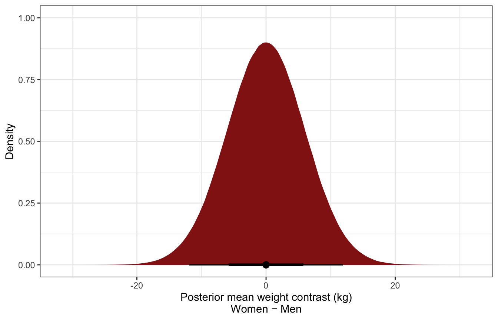
Distribution of predictive posterior contrasts across range of heights:
(The y-values are way off from the video here :shrug:)
ggplot(predicted_diffs_sex_height_stan, aes(x = height, y = diff_rep)) +
stat_lineribbon(aes(fill_ramp = stat(.width)), .width = ppoints(50),
fill = clrs[3], color = colorspace::darken(clrs[3], 0.5),
show.legend = FALSE) +
geom_hline(yintercept = 0, linetype = "dashed") +
scale_fill_ramp_continuous(from = "transparent", range = c(1, 0)) +
labs(x = "Height (cm)", y = "Posterior weight contrast (kg)\nWomen − Men")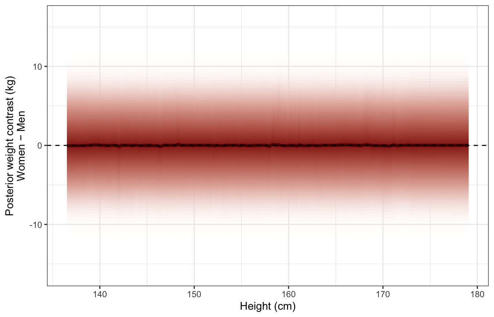
Full luxury Bayes!
Given this DAG:
height_sex_dag <- dagify(
x ~ z,
y ~ x + z,
exposure = "x",
outcome = "y",
labels = c(x = "Height", y = "Weight", z = "Sex"),
coords = list(x = c(x = 1, y = 3, z = 2),
y = c(x = 1, y = 1, z = 2))) %>%
tidy_dagitty() %>%
node_status()
ggplot(height_sex_dag, aes(x = x, y = y, xend = xend, yend = yend)) +
geom_dag_edges() +
geom_dag_point(aes(color = status)) +
geom_dag_text(aes(label = label), size = 3.5) +
scale_color_manual(values = clrs[c(1, 4)], guide = "none") +
theme_dag()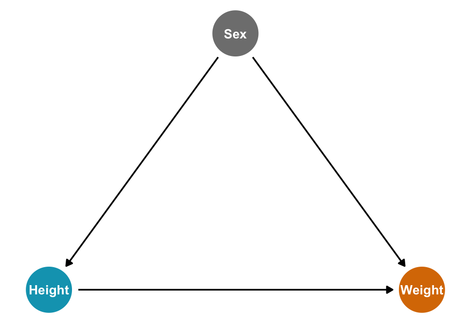
…what’s the causal effect of sex on weight? Or:
\[ E(\text{Weight} \mid \operatorname{do}(\text{Sex})) \]
Here’s the official model:
\[ \begin{aligned} H_i &\sim \mathcal{N}(\nu_i, \tau) \\ W_i &\sim \mathcal{N}(\mu_i, \sigma) \\ \nu_i &= h_{S[i]} \\ \mu_i &= \alpha_{S[i]} + \beta_{S[i]}(H_i - \bar{H}) \\ \\ h_j &\sim \mathcal{N}(160, 10) \\ \alpha_j &\sim \mathcal{N}(60, 10) \\ \beta_j &\sim \operatorname{LogNormal}(0, 1) \\ \sigma, \tau &\sim \operatorname{Uniform}(0, 10) \end{aligned} \]
The results should look something like this, from the slides:
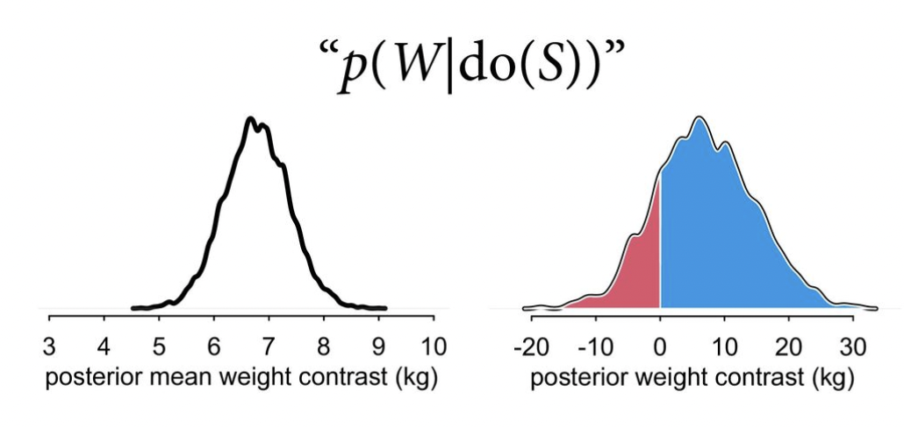
priors <- c(prior(normal(60, 10), resp = weight, class = b, nlpar = a),
prior(lognormal(0, 1), resp = weight, class = b, nlpar = b, lb = 0),
prior(uniform(0, 10), resp = weight, class = sigma, lb = 0, ub = 10),
# prior(normal(160, 10), resp = height, class = b),
prior(normal(0, 1), resp = heightz, class = b),
prior(uniform(0, 10), resp = heightz, class = sigma, lb = 0, ub = 10))
model_luxury <- brm(
bf(weight ~ 0 + a + b * height_z,
a ~ 0 + sex,
b ~ 0 + sex,
nl = TRUE) +
bf(height_z ~ 0 + sex) +
set_rescor(TRUE),
data = d,
family = gaussian(),
prior = priors,
chains = 4, cores = 4, seed = BAYES_SEED
)
## Compiling Stan program...
## Trying to compile a simple C file
## Start samplingmodel_luxury
## Family: MV(gaussian, gaussian)
## Links: mu = identity; sigma = identity
## mu = identity; sigma = identity
## Formula: weight ~ 0 + a + b * height_z
## a ~ 0 + sex
## b ~ 0 + sex
## height_z ~ 0 + sex
## Data: d (Number of observations: 346)
## Draws: 4 chains, each with iter = 2000; warmup = 1000; thin = 1;
## total post-warmup draws = 4000
##
## Population-Level Effects:
## Estimate Est.Error l-95% CI u-95% CI Rhat Bulk_ESS Tail_ESS
## weight_a_sex0 42.58 0.64 41.52 44.07 1.01 598 285
## weight_a_sex1 47.97 0.64 46.49 49.02 1.01 552 313
## weight_b_sex0 1.09 0.77 0.17 3.02 1.01 565 255
## weight_b_sex1 0.89 0.70 0.12 2.73 1.01 491 275
## heightz_sex0 -0.66 0.05 -0.77 -0.55 1.00 2384 1681
## heightz_sex1 0.74 0.06 0.62 0.85 1.00 2806 2528
##
## Family Specific Parameters:
## Estimate Est.Error l-95% CI u-95% CI Rhat Bulk_ESS Tail_ESS
## sigma_weight 5.13 0.29 4.49 5.67 1.01 666 291
## sigma_heightz 0.72 0.03 0.67 0.77 1.00 3262 1965
##
## Residual Correlations:
## Estimate Est.Error l-95% CI u-95% CI Rhat Bulk_ESS
## rescor(weight,heightz) 0.54 0.09 0.32 0.65 1.01 560
## Tail_ESS
## rescor(weight,heightz) 265
##
## Draws were sampled using sampling(NUTS). For each parameter, Bulk_ESS
## and Tail_ESS are effective sample size measures, and Rhat is the potential
## scale reduction factor on split chains (at convergence, Rhat = 1).Posterior mean contrast in weights:
luxury_post_mean_diff <- expand_grid(
height_z = seq(min(d$height_z), max(d$height_z), length.out = 50),
sex = 0:1
) %>%
add_epred_draws(model_luxury) %>%
compare_levels(variable = .epred, by = sex, comparison = list(c("1", "0")))
luxury_post_mean_diff %>%
filter(.category == "weight") %>%
ggplot(aes(x = .epred)) +
stat_halfeye(fill = clrs[3]) +
labs(x = "Posterior mean weight contrast (kg)\nWomen − Men", y = "Density")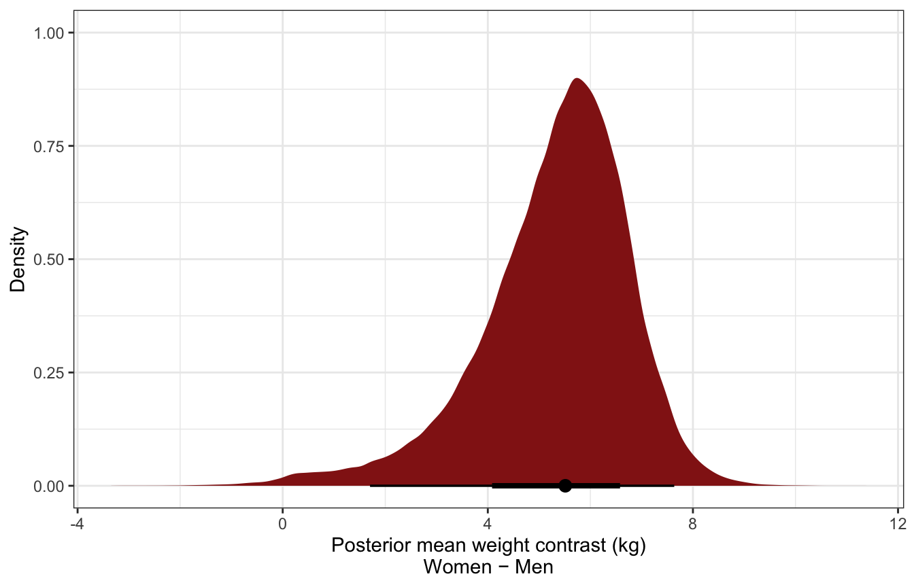
Posterior predicted contrast in weights:
luxury_post_pred_diff <- expand_grid(
height_z = seq(min(d$height_z), max(d$height_z), length.out = 50),
sex = 0:1
) %>%
add_predicted_draws(model_luxury) %>%
compare_levels(variable = .prediction, by = sex, comparison = list(c("1", "0")))
luxury_post_pred_diff %>%
filter(.category == "weight") %>%
ggplot(aes(x = .prediction)) +
stat_halfeye(aes(fill = stat(x > 0))) +
geom_vline(xintercept = 0) +
scale_fill_manual(values = c(colorspace::lighten(clrs[3], 0.5), clrs[3]),
guide = "none") +
labs(x = "Posterior weight contrast (kg)\nWomen − Men", y = "Density")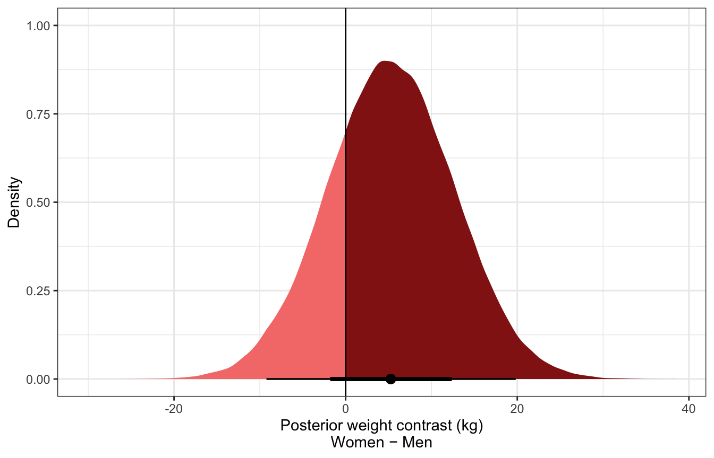
Extracting Stan code from Rethinking models
m_SHW_full <- rethinking::quap(
alist(
# Weight
W ~ dnorm(mu, sigma),
mu <- a[S] + b[S] * (H - Hbar),
a[S] ~ dnorm(60, 10),
b[S] ~ dlnorm(0, 1),
sigma ~ dunif(0, 10),
# Height
H ~ dnorm(nu, tau),
nu <- h[S],
h[S] ~ dnorm(160, 10),
tau ~ dunif(0, 10)
), data = list(
W = d$weight,
H = d$height,
Hbar = mean(d$height),
S = d$male + 1
)
)
cat(rethinking::ulam(m_SHW_full, sample = FALSE)$model)luxury_stan.stan
data {
// Stuff from R
int<lower=1> n;
vector[n] weight;
real Hbar;
vector[n] height;
int sex[n];
}
parameters {
// Things to estimate
vector[2] a;
vector<lower=0>[2] b;
real<lower=0,upper=10> sigma;
vector[2] h;
real<lower=0,upper=10> tau;
}
model {
vector[n] mu;
vector[n] nu;
// Height model
tau ~ uniform(0, 10);
h ~ normal(160, 10);
for (i in 1:n) {
nu[i] = h[sex[i]];
}
// Weight model
height ~ normal(nu , tau);
sigma ~ uniform(0, 10);
b ~ lognormal(0, 1);
a ~ normal(60, 10);
for (i in 1:n) {
mu[i] = a[sex[i]] + b[sex[i]] * (height[i] - Hbar);
}
weight ~ normal(mu, sigma);
}
generated quantities {
matrix[n, 2] weight_rep;
matrix[n, 2] height_rep;
vector[n] w_do_s;
vector[2] mu_sex;
real mu_diff;
for (i in 1:2) {
mu_sex[i] = a[sex[i]] + b[sex[i]] * (h[sex[i]] - Hbar);
}
mu_diff = mu_sex[1] - mu_sex[2];
// Generate a posterior predictive distribution for each sex
// To do this we have to create a matrix, with a column per sex
for (j in 1:2) {
for (i in 1:n) {
height_rep[i, j] = normal_rng(h[sex[j]], tau);
weight_rep[i, j] = normal_rng(a[sex[j]] + b[sex[j]] * (height_rep[i, j] - Hbar), sigma);
}
}
// Generate a posterior predictive distribution of group contrasts
for (i in 1:n) {
w_do_s[i] = weight_rep[i, 1] - weight_rep[i, 2];
}
}stan_data <- list(n = nrow(d),
weight = d$weight,
height = d$height,
Hbar = mean(d$height),
sex = d$male + 1)
model_luxury_stan <- rstan::sampling(
object = luxury_stan,
data = stan_data,
iter = 5000, warmup = 1000, seed = BAYES_SEED, chains = 4, cores = 4
)print(model_luxury_stan,
pars = c("a[1]", "a[2]", "b[1]", "b[2]", "sigma", "h[1]", "h[2]", "tau",
"mu_sex[1]", "mu_sex[2]", "mu_diff"))
## Inference for Stan model: 2ac72225665508fb4100c7f800818c3a.
## 4 chains, each with iter=5000; warmup=1000; thin=1;
## post-warmup draws per chain=4000, total post-warmup draws=16000.
##
## mean se_mean sd 2.5% 25% 50% 75% 97.5% n_eff Rhat
## a[1] 45.18 0 0.46 44.28 44.87 45.17 45.48 46.08 12392 1
## a[2] 45.14 0 0.46 44.25 44.83 45.14 45.45 46.03 12553 1
## b[1] 0.65 0 0.06 0.52 0.60 0.65 0.69 0.77 12075 1
## b[2] 0.61 0 0.06 0.50 0.57 0.61 0.65 0.72 13048 1
## sigma 4.28 0 0.16 3.97 4.17 4.28 4.39 4.62 21039 1
## h[1] 149.50 0 0.41 148.70 149.21 149.50 149.78 150.30 22463 1
## h[2] 160.37 0 0.44 159.52 160.08 160.37 160.67 161.22 22320 1
## tau 5.57 0 0.21 5.18 5.43 5.56 5.71 6.01 19301 1
## mu_sex[1] 48.63 0 0.42 47.79 48.35 48.63 48.92 49.46 21139 1
## mu_sex[2] 41.85 0 0.42 41.04 41.57 41.85 42.13 42.67 21824 1
## mu_diff 6.78 0 0.59 5.62 6.37 6.78 7.18 7.94 20965 1
##
## Samples were drawn using NUTS(diag_e) at Thu Sep 15 01:56:43 2022.
## For each parameter, n_eff is a crude measure of effective sample size,
## and Rhat is the potential scale reduction factor on split chains (at
## convergence, Rhat=1).Posterior mean contrast in weights:
luxury_post_mean_diff_stan <- model_luxury_stan %>%
spread_draws(mu_diff)
luxury_post_mean_diff_stan %>%
mean_hdci()
## # A tibble: 1 × 6
## mu_diff .lower .upper .width .point .interval
## <dbl> <dbl> <dbl> <dbl> <chr> <chr>
## 1 6.78 5.64 7.95 0.95 mean hdci
ggplot(luxury_post_mean_diff_stan, aes(x = mu_diff)) +
stat_halfeye(fill = clrs[3]) +
labs(x = "Posterior mean weight contrast (kg)\nWomen − Men", y = "Density")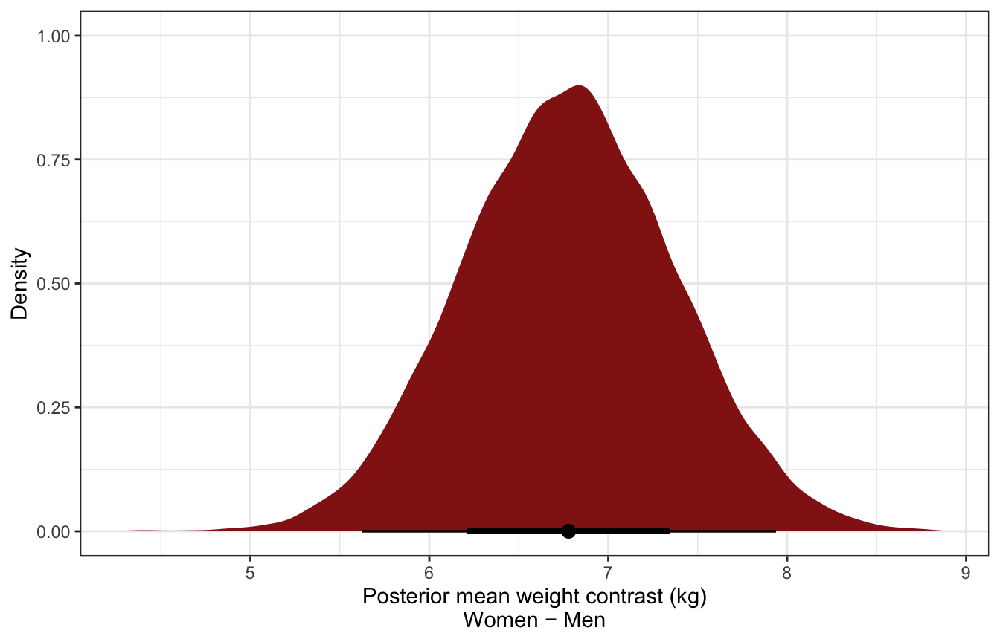
luxury_post_pred_diff_stan <- model_luxury_stan %>%
spread_draws(w_do_s[i])
luxury_post_pred_diff_stan %>%
mean_hdci()
## # A tibble: 346 × 7
## i w_do_s .lower .upper .width .point .interval
## <int> <dbl> <dbl> <dbl> <dbl> <chr> <chr>
## 1 1 6.79 -8.96 21.5 0.95 mean hdci
## 2 2 6.86 -8.69 22.2 0.95 mean hdci
## 3 3 6.79 -8.46 22.6 0.95 mean hdci
## 4 4 6.86 -9.38 21.3 0.95 mean hdci
## 5 5 6.71 -8.26 22.7 0.95 mean hdci
## 6 6 6.85 -8.15 22.8 0.95 mean hdci
## 7 7 6.78 -8.74 22.4 0.95 mean hdci
## 8 8 6.85 -8.36 22.6 0.95 mean hdci
## 9 9 6.82 -8.79 21.9 0.95 mean hdci
## 10 10 6.80 -8.53 21.8 0.95 mean hdci
## # … with 336 more rows
ggplot(luxury_post_pred_diff_stan, aes(x = w_do_s)) +
stat_halfeye(aes(fill = stat(x > 0))) +
geom_vline(xintercept = 0) +
scale_fill_manual(values = c(colorspace::lighten(clrs[3], 0.5), clrs[3]),
guide = "none") +
labs(x = "Posterior weight contrast (kg)\nWomen − Men", y = "Density")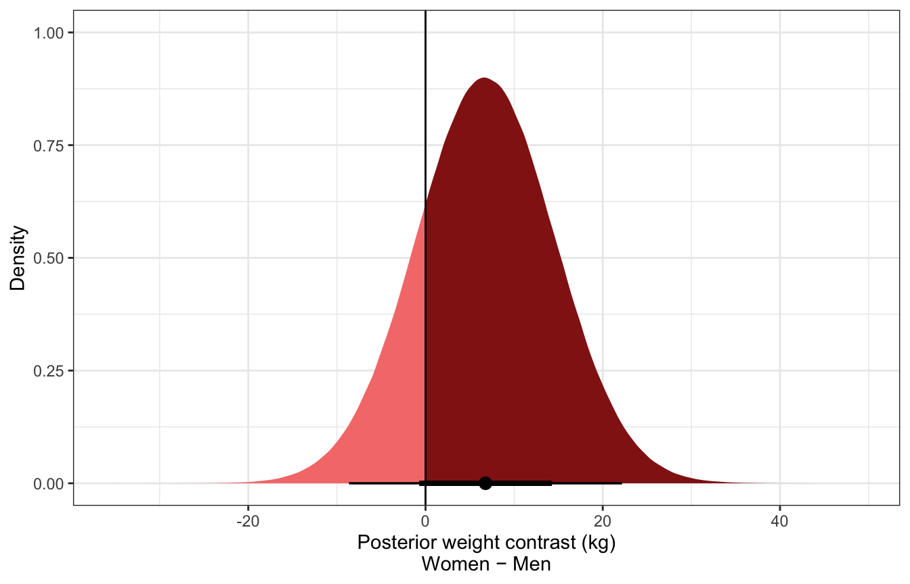